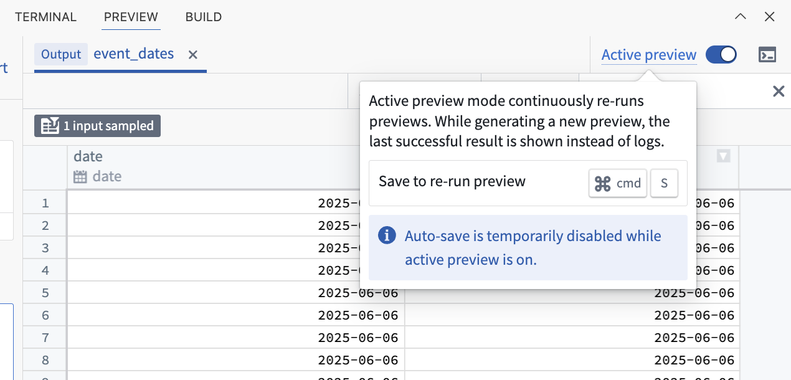
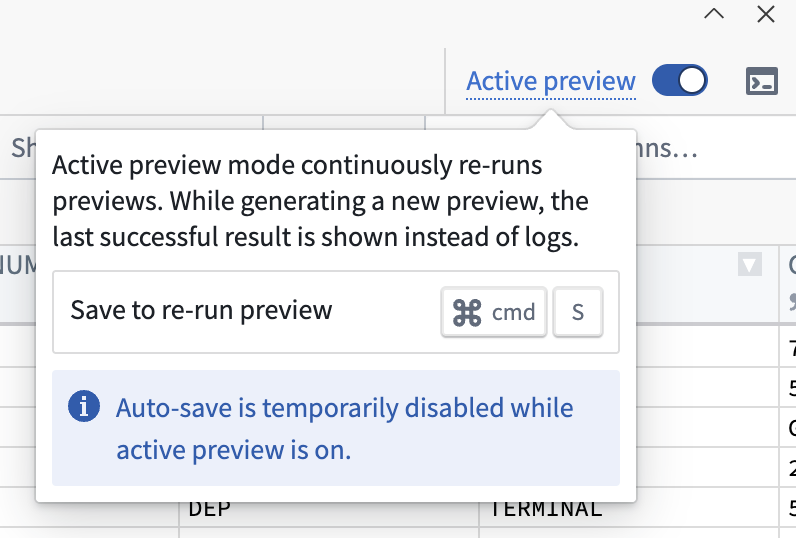

Active Preview
Active Preview is a feature designed to provide you with fast feedback as you develop your transforms. With Active Preview, your preview updates automatically every time you save changes, allowing you to immediately view results or errors as you write or update code.
When Active Preview is enabled, your transform is re-executed on every save. This means the following:
- The preview panel always shows up-to-date intermediate results or errors.
- You do not need to manually trigger a new preview after each change.
- Extensive caching is used to speed up the process, so you get results faster compared to a normal preview.
Caching in Active Preview
Active Preview uses caching to make previews faster. This includes:
- Project resources and context
- Information about your project and its dependencies
- Network checks and setup file contents
- In-memory caching for datasets
When to use Active Preview
Active Preview is ideal for the following workflows:
- Preview with expensive code-defined filters: The result of the code-defined filters is cached, resulting in faster subsequent previews.
- Iterative development: Impact assessment while frequently changing transform logic.
- Transforms with slow preview setup: Reduce waiting time with extra caching.
:::callout{theme="neutral"}
Since Active Preview stores filtered input datasets in memory, it is best suited for datasets small enough to fit into available memory.
:::
Enable Active Preview
Toggle on Active Preview once you initiate a preview.

Once enabled, any preview you start in the same workspace will launch as an Active Preview session. To exit Active Preview, either Abort the current session or toggle off the option.
Best practices and considerations
- Do not change the name or location of your transform while Active Preview is running: If you need to edit these configurations, abort the Active Preview session, make your changes, then restart.
- Caching and project updates: Sometimes, changes elsewhere in your project (like references) may not appear immediately in your preview due to extensive caching. If you need to view updates right away, stop and restart Active Preview.
- Auto-save is automatically disabled: While Active Preview is running, previews only trigger when you manually save your work. Auto-save will be re-enabled when you exit Active Preview.

- Be mindful of external requests: Every save triggers a new preview. If your transform makes requests to external APIs, those endpoints may see more traffic than usual.
- Only run one preview at a time: While Active Preview is running, you cannot start another preview or use the debug mode. Disable Active Preview first if you need to switch.
- Editing
setup.py: If you need to change your setup.py file, do so outside of Active Preview sessions for best results.